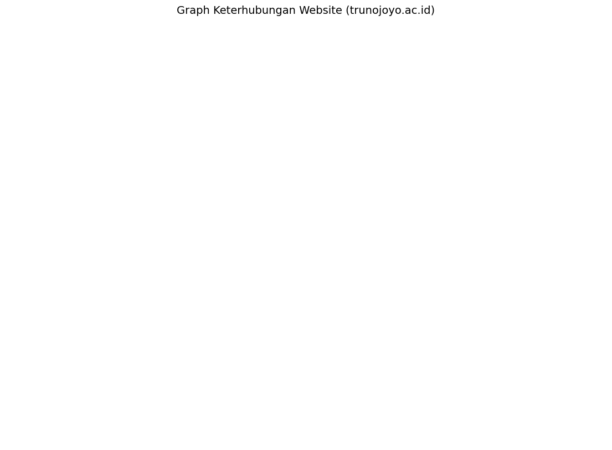

<!DOCTYPE html>


<html lang="en" data-content_root="" >

  <head>
    <meta charset="utf-8" />
    <meta name="viewport" content="width=device-width, initial-scale=1.0" /><meta name="generator" content="Docutils 0.18.1: http://docutils.sourceforge.net/" />

    <title>Crawling Link &#8212; My sample book</title>
  
  
  
  <script data-cfasync="false">
    document.documentElement.dataset.mode = localStorage.getItem("mode") || "";
    document.documentElement.dataset.theme = localStorage.getItem("theme") || "";
  </script>
  
  <!-- Loaded before other Sphinx assets -->
  <link href="_static/styles/theme.css?digest=dfe6caa3a7d634c4db9b" rel="stylesheet" />
<link href="_static/styles/bootstrap.css?digest=dfe6caa3a7d634c4db9b" rel="stylesheet" />
<link href="_static/styles/pydata-sphinx-theme.css?digest=dfe6caa3a7d634c4db9b" rel="stylesheet" />

  
  <link href="_static/vendor/fontawesome/6.5.2/css/all.min.css?digest=dfe6caa3a7d634c4db9b" rel="stylesheet" />
  <link rel="preload" as="font" type="font/woff2" crossorigin href="_static/vendor/fontawesome/6.5.2/webfonts/fa-solid-900.woff2" />
<link rel="preload" as="font" type="font/woff2" crossorigin href="_static/vendor/fontawesome/6.5.2/webfonts/fa-brands-400.woff2" />
<link rel="preload" as="font" type="font/woff2" crossorigin href="_static/vendor/fontawesome/6.5.2/webfonts/fa-regular-400.woff2" />

    <link rel="stylesheet" type="text/css" href="_static/pygments.css" />
    <link rel="stylesheet" href="_static/styles/sphinx-book-theme.css?digest=14f4ca6b54d191a8c7657f6c759bf11a5fb86285" type="text/css" />
    <link rel="stylesheet" type="text/css" href="_static/togglebutton.css" />
    <link rel="stylesheet" type="text/css" href="_static/copybutton.css" />
    <link rel="stylesheet" type="text/css" href="_static/mystnb.4510f1fc1dee50b3e5859aac5469c37c29e427902b24a333a5f9fcb2f0b3ac41.css" />
    <link rel="stylesheet" type="text/css" href="_static/sphinx-thebe.css" />
    <link rel="stylesheet" type="text/css" href="_static/design-style.4045f2051d55cab465a707391d5b2007.min.css" />
  
  <!-- Pre-loaded scripts that we'll load fully later -->
  <link rel="preload" as="script" href="_static/scripts/bootstrap.js?digest=dfe6caa3a7d634c4db9b" />
<link rel="preload" as="script" href="_static/scripts/pydata-sphinx-theme.js?digest=dfe6caa3a7d634c4db9b" />
  <script src="_static/vendor/fontawesome/6.5.2/js/all.min.js?digest=dfe6caa3a7d634c4db9b"></script>

    <script data-url_root="./" id="documentation_options" src="_static/documentation_options.js"></script>
    <script src="_static/jquery.js"></script>
    <script src="_static/underscore.js"></script>
    <script src="_static/_sphinx_javascript_frameworks_compat.js"></script>
    <script src="_static/doctools.js"></script>
    <script src="_static/clipboard.min.js"></script>
    <script src="_static/copybutton.js"></script>
    <script src="_static/scripts/sphinx-book-theme.js?digest=5a5c038af52cf7bc1a1ec88eea08e6366ee68824"></script>
    <script>let toggleHintShow = 'Click to show';</script>
    <script>let toggleHintHide = 'Click to hide';</script>
    <script>let toggleOpenOnPrint = 'true';</script>
    <script src="_static/togglebutton.js"></script>
    <script>var togglebuttonSelector = '.toggle, .admonition.dropdown';</script>
    <script src="_static/design-tabs.js"></script>
    <script>const THEBE_JS_URL = "https://unpkg.com/thebe@0.8.2/lib/index.js"
const thebe_selector = ".thebe,.cell"
const thebe_selector_input = "pre"
const thebe_selector_output = ".output, .cell_output"
</script>
    <script async="async" src="_static/sphinx-thebe.js"></script>
    <script>DOCUMENTATION_OPTIONS.pagename = 'CrawlingLink';</script>
    <link rel="index" title="Index" href="genindex.html" />
    <link rel="search" title="Search" href="search.html" />
  <meta name="viewport" content="width=device-width, initial-scale=1"/>
  <meta name="docsearch:language" content="en"/>
  </head>
  
  
  <body data-bs-spy="scroll" data-bs-target=".bd-toc-nav" data-offset="180" data-bs-root-margin="0px 0px -60%" data-default-mode="">

  
  
  <div id="pst-skip-link" class="skip-link d-print-none"><a href="#main-content">Skip to main content</a></div>
  
  <div id="pst-scroll-pixel-helper"></div>
  
  <button type="button" class="btn rounded-pill" id="pst-back-to-top">
    <i class="fa-solid fa-arrow-up"></i>Back to top</button>

  
  <input type="checkbox"
          class="sidebar-toggle"
          id="pst-primary-sidebar-checkbox"/>
  <label class="overlay overlay-primary" for="pst-primary-sidebar-checkbox"></label>
  
  <input type="checkbox"
          class="sidebar-toggle"
          id="pst-secondary-sidebar-checkbox"/>
  <label class="overlay overlay-secondary" for="pst-secondary-sidebar-checkbox"></label>
  
  <div class="search-button__wrapper">
    <div class="search-button__overlay"></div>
    <div class="search-button__search-container">
<form class="bd-search d-flex align-items-center"
      action="search.html"
      method="get">
  <i class="fa-solid fa-magnifying-glass"></i>
  <input type="search"
         class="form-control"
         name="q"
         id="search-input"
         placeholder="Search this book..."
         aria-label="Search this book..."
         autocomplete="off"
         autocorrect="off"
         autocapitalize="off"
         spellcheck="false"/>
  <span class="search-button__kbd-shortcut"><kbd class="kbd-shortcut__modifier">Ctrl</kbd>+<kbd>K</kbd></span>
</form></div>
  </div>

  <div class="pst-async-banner-revealer d-none">
  <aside id="bd-header-version-warning" class="d-none d-print-none" aria-label="Version warning"></aside>
</div>

  
    <header class="bd-header navbar navbar-expand-lg bd-navbar d-print-none">
    </header>
  

  <div class="bd-container">
    <div class="bd-container__inner bd-page-width">
      
      
      
        
      
      <div class="bd-sidebar-primary bd-sidebar">
        

  
  <div class="sidebar-header-items sidebar-primary__section">
    
    
    
    
  </div>
  
    <div class="sidebar-primary-items__start sidebar-primary__section">
        <div class="sidebar-primary-item">

  
    
  

<a class="navbar-brand logo" href="intro.html">
  
  
  
  
  
    
    
      
    
    
    
    <script>document.write(``);</script>
  
  
</a></div>
        <div class="sidebar-primary-item"><nav class="bd-links" id="bd-docs-nav" aria-label="Main">
    <div class="bd-toc-item navbar-nav active">
        
        <ul class="nav bd-sidenav bd-sidenav__home-link">
            <li class="toctree-l1">
                <a class="reference internal" href="intro.html">
                    Profile
                </a>
            </li>
        </ul>
        <ul class="nav bd-sidenav">
<li class="toctree-l1"><a class="reference internal" href="PengantarWebMining.html">Pengantar Web Mining</a></li>
<li class="toctree-l1"><a class="reference internal" href="crawllingData.html">Crawling Data</a></li>
<li class="toctree-l1"><a class="reference internal" href="Pemrosesan_Data_Berita_%26_PTA.html">Pemrosesan Data Berita &amp; PTA</a></li>

<li class="toctree-l1"><a class="reference internal" href="tfidf.html">TF-IDF</a></li>
<li class="toctree-l1"><a class="reference internal" href="Topic%20Modelling%20LDA%20KlasifikasiSVM.html">Topic Modelling LDA Klasifikasi SVM</a></li>
</ul>

    </div>
</nav></div>
    </div>
  
  
  <div class="sidebar-primary-items__end sidebar-primary__section">
  </div>
  
  <div id="rtd-footer-container"></div>


      </div>
      
      <main id="main-content" class="bd-main" role="main">
        
        

<div class="sbt-scroll-pixel-helper"></div>

          <div class="bd-content">
            <div class="bd-article-container">
              
              <div class="bd-header-article d-print-none">
<div class="header-article-items header-article__inner">
  
    <div class="header-article-items__start">
      
        <div class="header-article-item"><label class="sidebar-toggle primary-toggle btn btn-sm" for="__primary" title="Toggle primary sidebar" data-bs-placement="bottom" data-bs-toggle="tooltip">
  <span class="fa-solid fa-bars"></span>
</label></div>
      
    </div>
  
  
    <div class="header-article-items__end">
      
        <div class="header-article-item">

<div class="article-header-buttons">


<div class="dropdown dropdown-source-buttons">
  <button class="btn dropdown-toggle" type="button" data-bs-toggle="dropdown" aria-expanded="false" aria-label="Source repositories">
    <i class="fab fa-github"></i>
  </button>
  <ul class="dropdown-menu">
      
      
      
      <li><a href="https://github.com/executablebooks/jupyter-book" target="_blank"
   class="btn btn-sm btn-source-repository-button dropdown-item"
   title="Source repository"
   data-bs-placement="left" data-bs-toggle="tooltip"
>
  

<span class="btn__icon-container">
  <i class="fab fa-github"></i>
  </span>
<span class="btn__text-container">Repository</span>
</a>
</li>
      
      
      
      
      <li><a href="https://github.com/executablebooks/jupyter-book/issues/new?title=Issue%20on%20page%20%2FCrawlingLink.html&body=Your%20issue%20content%20here." target="_blank"
   class="btn btn-sm btn-source-issues-button dropdown-item"
   title="Open an issue"
   data-bs-placement="left" data-bs-toggle="tooltip"
>
  

<span class="btn__icon-container">
  <i class="fas fa-lightbulb"></i>
  </span>
<span class="btn__text-container">Open issue</span>
</a>
</li>
      
  </ul>
</div>


<div class="dropdown dropdown-download-buttons">
  <button class="btn dropdown-toggle" type="button" data-bs-toggle="dropdown" aria-expanded="false" aria-label="Download this page">
    <i class="fas fa-download"></i>
  </button>
  <ul class="dropdown-menu">
      
      
      
      <li><a href="_sources/CrawlingLink.ipynb" target="_blank"
   class="btn btn-sm btn-download-source-button dropdown-item"
   title="Download source file"
   data-bs-placement="left" data-bs-toggle="tooltip"
>
  

<span class="btn__icon-container">
  <i class="fas fa-file"></i>
  </span>
<span class="btn__text-container">.ipynb</span>
</a>
</li>
      
      
      
      
      <li>
<button onclick="window.print()"
  class="btn btn-sm btn-download-pdf-button dropdown-item"
  title="Print to PDF"
  data-bs-placement="left" data-bs-toggle="tooltip"
>
  

<span class="btn__icon-container">
  <i class="fas fa-file-pdf"></i>
  </span>
<span class="btn__text-container">.pdf</span>
</button>
</li>
      
  </ul>
</div>


<button onclick="toggleFullScreen()"
  class="btn btn-sm btn-fullscreen-button"
  title="Fullscreen mode"
  data-bs-placement="bottom" data-bs-toggle="tooltip"
>
  

<span class="btn__icon-container">
  <i class="fas fa-expand"></i>
  </span>

</button>


<script>
document.write(`
  <button class="btn btn-sm nav-link pst-navbar-icon theme-switch-button" title="light/dark" aria-label="light/dark" data-bs-placement="bottom" data-bs-toggle="tooltip">
    <i class="theme-switch fa-solid fa-sun fa-lg" data-mode="light"></i>
    <i class="theme-switch fa-solid fa-moon fa-lg" data-mode="dark"></i>
    <i class="theme-switch fa-solid fa-circle-half-stroke fa-lg" data-mode="auto"></i>
  </button>
`);
</script>


<script>
document.write(`
  <button class="btn btn-sm pst-navbar-icon search-button search-button__button" title="Search" aria-label="Search" data-bs-placement="bottom" data-bs-toggle="tooltip">
    <i class="fa-solid fa-magnifying-glass fa-lg"></i>
  </button>
`);
</script>

</div></div>
      
    </div>
  
</div>
</div>
              
              

<div id="jb-print-docs-body" class="onlyprint">
    <h1>Crawling Link</h1>
    <!-- Table of contents -->
    <div id="print-main-content">
        <div id="jb-print-toc">
            
        </div>
    </div>
</div>

              
                
<div id="searchbox"></div>
                <article class="bd-article">
                  
  <section class="tex2jax_ignore mathjax_ignore" id="crawling-link">
<h1>Crawling Link<a class="headerlink" href="#crawling-link" title="Permalink to this heading">#</a></h1>
<p>#<strong>1. Install dan Import Library</strong></p>
<div class="cell docutils container">
<div class="cell_input docutils container">
<div class="highlight-ipython3 notranslate"><div class="highlight"><pre><span></span><span class="o">!</span>pip<span class="w"> </span>install<span class="w"> </span>builtwith
</pre></div>
</div>
</div>
<div class="cell_output docutils container">
<div class="output stream highlight-myst-ansi notranslate"><div class="highlight"><pre><span></span>Collecting builtwith
</pre></div>
</div>
<div class="output stream highlight-myst-ansi notranslate"><div class="highlight"><pre><span></span>  Downloading builtwith-1.3.4.tar.gz (34 kB)
</pre></div>
</div>
<div class="output stream highlight-myst-ansi notranslate"><div class="highlight"><pre><span></span>  Installing build dependencies ... ?25l-
</pre></div>
</div>
<div class="output stream highlight-myst-ansi notranslate"><div class="highlight"><pre><span></span> \
</pre></div>
</div>
<div class="output stream highlight-myst-ansi notranslate"><div class="highlight"><pre><span></span> done
</pre></div>
</div>
<div class="output stream highlight-myst-ansi notranslate"><div class="highlight"><pre><span></span>?25h  Getting requirements to build wheel ... ?25ldone
</pre></div>
</div>
<div class="output stream highlight-myst-ansi notranslate"><div class="highlight"><pre><span></span>?25h  Preparing metadata (pyproject.toml) ... ?25ldone
?25hRequirement already satisfied: six in /home/codespace/.local/lib/python3.12/site-packages (from builtwith) (1.17.0)
Building wheels for collected packages: builtwith
</pre></div>
</div>
<div class="output stream highlight-myst-ansi notranslate"><div class="highlight"><pre><span></span>  Building wheel for builtwith (pyproject.toml) ... ?25ldone
?25h  Created wheel for builtwith: filename=builtwith-1.3.4-py3-none-any.whl size=36121 sha256=073881bb6587d138be5726aeb892e132371996fef3e4611553bb89c9aed01e80
  Stored in directory: /home/codespace/.cache/pip/wheels/7f/2d/b2/606e3df914d4aeeab99c4a4e3e9a61673d2293c2e346db00c8
Successfully built builtwith
</pre></div>
</div>
<div class="output stream highlight-myst-ansi notranslate"><div class="highlight"><pre><span></span>Installing collected packages: builtwith
</pre></div>
</div>
<div class="output stream highlight-myst-ansi notranslate"><div class="highlight"><pre><span></span>Successfully installed builtwith-1.3.4
</pre></div>
</div>
</div>
</div>
<div class="cell docutils container">
<div class="cell_input docutils container">
<div class="highlight-ipython3 notranslate"><div class="highlight"><pre><span></span><span class="o">!</span>pip<span class="w"> </span>install<span class="w"> </span>requests
</pre></div>
</div>
</div>
<div class="cell_output docutils container">
<div class="output stream highlight-myst-ansi notranslate"><div class="highlight"><pre><span></span>Requirement already satisfied: requests in /home/codespace/.local/lib/python3.12/site-packages (2.32.5)
Requirement already satisfied: charset_normalizer&lt;4,&gt;=2 in /home/codespace/.local/lib/python3.12/site-packages (from requests) (3.4.4)
Requirement already satisfied: idna&lt;4,&gt;=2.5 in /home/codespace/.local/lib/python3.12/site-packages (from requests) (3.11)
Requirement already satisfied: urllib3&lt;3,&gt;=1.21.1 in /home/codespace/.local/lib/python3.12/site-packages (from requests) (2.5.0)
Requirement already satisfied: certifi&gt;=2017.4.17 in /home/codespace/.local/lib/python3.12/site-packages (from requests) (2025.10.5)
</pre></div>
</div>
</div>
</div>
<div class="cell docutils container">
<div class="cell_input docutils container">
<div class="highlight-ipython3 notranslate"><div class="highlight"><pre><span></span><span class="o">!</span>pip<span class="w"> </span>install<span class="w"> </span>beautifulsoup4
</pre></div>
</div>
</div>
<div class="cell_output docutils container">
<div class="output stream highlight-myst-ansi notranslate"><div class="highlight"><pre><span></span>Requirement already satisfied: beautifulsoup4 in /home/codespace/.local/lib/python3.12/site-packages (4.14.2)
Requirement already satisfied: soupsieve&gt;1.2 in /home/codespace/.local/lib/python3.12/site-packages (from beautifulsoup4) (2.8)
Requirement already satisfied: typing-extensions&gt;=4.0.0 in /home/codespace/.local/lib/python3.12/site-packages (from beautifulsoup4) (4.15.0)
</pre></div>
</div>
</div>
</div>
<div class="cell docutils container">
<div class="cell_input docutils container">
<div class="highlight-ipython3 notranslate"><div class="highlight"><pre><span></span><span class="kn">import</span><span class="w"> </span><span class="nn">builtwith</span>
<span class="kn">import</span><span class="w"> </span><span class="nn">requests</span>
<span class="kn">from</span><span class="w"> </span><span class="nn">bs4</span><span class="w"> </span><span class="kn">import</span> <span class="n">BeautifulSoup</span>
<span class="kn">import</span><span class="w"> </span><span class="nn">pandas</span><span class="w"> </span><span class="k">as</span><span class="w"> </span><span class="nn">pd</span>
<span class="kn">import</span><span class="w"> </span><span class="nn">os</span>
<span class="kn">from</span><span class="w"> </span><span class="nn">IPython.display</span><span class="w"> </span><span class="kn">import</span> <span class="n">display</span>
<span class="kn">from</span><span class="w"> </span><span class="nn">urllib.parse</span><span class="w"> </span><span class="kn">import</span> <span class="n">urljoin</span><span class="p">,</span> <span class="n">urlparse</span>
</pre></div>
</div>
</div>
</div>
<div class="cell docutils container">
<div class="cell_input docutils container">
<div class="highlight-ipython3 notranslate"><div class="highlight"><pre><span></span><span class="kn">import</span><span class="w"> </span><span class="nn">networkx</span><span class="w"> </span><span class="k">as</span><span class="w"> </span><span class="nn">nx</span>
<span class="kn">import</span><span class="w"> </span><span class="nn">matplotlib.pyplot</span><span class="w"> </span><span class="k">as</span><span class="w"> </span><span class="nn">plt</span>
</pre></div>
</div>
</div>
</div>
<p>#<strong>2. Analisis</strong></p>
<div class="cell docutils container">
<div class="cell_input docutils container">
<div class="highlight-ipython3 notranslate"><div class="highlight"><pre><span></span><span class="n">res</span> <span class="o">=</span> <span class="n">builtwith</span><span class="o">.</span><span class="n">parse</span><span class="p">(</span><span class="s1">&#39;https://www2.trunojoyo.ac.id/&#39;</span><span class="p">)</span>
<span class="nb">print</span><span class="p">(</span><span class="n">res</span><span class="p">)</span>
</pre></div>
</div>
</div>
<div class="cell_output docutils container">
<div class="output stream highlight-myst-ansi notranslate"><div class="highlight"><pre><span></span>{&#39;cdn&#39;: [&#39;CloudFlare&#39;], &#39;font-scripts&#39;: [&#39;Google Font API&#39;], &#39;javascript-frameworks&#39;: [&#39;Modernizr&#39;, &#39;jQuery&#39;, &#39;jQuery UI&#39;], &#39;widgets&#39;: [&#39;OWL Carousel&#39;], &#39;photo-galleries&#39;: [&#39;jQuery&#39;], &#39;web-frameworks&#39;: [&#39;Twitter Bootstrap&#39;], &#39;cms&#39;: [&#39;WordPress&#39;], &#39;programming-languages&#39;: [&#39;PHP&#39;], &#39;blogs&#39;: [&#39;PHP&#39;, &#39;WordPress&#39;]}
</pre></div>
</div>
</div>
</div>
<div class="cell docutils container">
<div class="cell_input docutils container">
<div class="highlight-ipython3 notranslate"><div class="highlight"><pre><span></span><span class="kn">import</span><span class="w"> </span><span class="nn">requests</span>
<span class="kn">from</span><span class="w"> </span><span class="nn">bs4</span><span class="w"> </span><span class="kn">import</span> <span class="n">BeautifulSoup</span>
<span class="kn">import</span><span class="w"> </span><span class="nn">pandas</span><span class="w"> </span><span class="k">as</span><span class="w"> </span><span class="nn">pd</span>
<span class="kn">from</span><span class="w"> </span><span class="nn">urllib.parse</span><span class="w"> </span><span class="kn">import</span> <span class="n">urlparse</span><span class="p">,</span> <span class="n">urljoin</span>

<span class="k">def</span><span class="w"> </span><span class="nf">crawling_website</span><span class="p">(</span><span class="n">link_awal</span><span class="p">,</span> <span class="n">batas_halaman</span><span class="o">=</span><span class="mi">50</span><span class="p">):</span>
    <span class="n">sudah_dikunjungi</span> <span class="o">=</span> <span class="nb">set</span><span class="p">()</span>   <span class="c1"># halaman yang sudah dikunjungi</span>
    <span class="n">hasil</span> <span class="o">=</span> <span class="p">[]</span>                 <span class="c1"># tempat menyimpan hasil crawling</span>

    <span class="c1"># ambil domain utama pakai netloc</span>
    <span class="n">domain_utama</span> <span class="o">=</span> <span class="n">urlparse</span><span class="p">(</span><span class="n">link_awal</span><span class="p">)</span><span class="o">.</span><span class="n">netloc</span><span class="o">.</span><span class="n">replace</span><span class="p">(</span><span class="s2">&quot;www.&quot;</span><span class="p">,</span> <span class="s2">&quot;&quot;</span><span class="p">)</span>
    <span class="n">antrian</span> <span class="o">=</span> <span class="p">[</span><span class="n">link_awal</span><span class="p">]</span>      <span class="c1"># halaman awal untuk dimasukkan ke antrian</span>

    <span class="n">nomor_id</span> <span class="o">=</span> <span class="mi">1</span>

    <span class="k">while</span> <span class="n">antrian</span> <span class="ow">and</span> <span class="nb">len</span><span class="p">(</span><span class="n">sudah_dikunjungi</span><span class="p">)</span> <span class="o">&lt;</span> <span class="n">batas_halaman</span><span class="p">:</span>
        <span class="n">link_sekarang</span> <span class="o">=</span> <span class="n">antrian</span><span class="o">.</span><span class="n">pop</span><span class="p">(</span><span class="mi">0</span><span class="p">)</span>

        <span class="k">if</span> <span class="n">link_sekarang</span> <span class="ow">in</span> <span class="n">sudah_dikunjungi</span><span class="p">:</span>
            <span class="k">continue</span>
        <span class="n">sudah_dikunjungi</span><span class="o">.</span><span class="n">add</span><span class="p">(</span><span class="n">link_sekarang</span><span class="p">)</span>

        <span class="k">try</span><span class="p">:</span>
            <span class="n">respon</span> <span class="o">=</span> <span class="n">requests</span><span class="o">.</span><span class="n">get</span><span class="p">(</span><span class="n">link_sekarang</span><span class="p">,</span> <span class="n">timeout</span><span class="o">=</span><span class="mi">10</span><span class="p">)</span>
            <span class="n">respon</span><span class="o">.</span><span class="n">raise_for_status</span><span class="p">()</span>
            <span class="n">halaman</span> <span class="o">=</span> <span class="n">BeautifulSoup</span><span class="p">(</span><span class="n">respon</span><span class="o">.</span><span class="n">content</span><span class="p">,</span> <span class="s2">&quot;html.parser&quot;</span><span class="p">)</span>

            <span class="c1"># cari semua link di halaman</span>
            <span class="n">semua_link</span> <span class="o">=</span> <span class="n">halaman</span><span class="o">.</span><span class="n">find_all</span><span class="p">(</span><span class="s2">&quot;a&quot;</span><span class="p">,</span> <span class="n">href</span><span class="o">=</span><span class="kc">True</span><span class="p">)</span>
            <span class="k">for</span> <span class="n">tag_link</span> <span class="ow">in</span> <span class="n">semua_link</span><span class="p">:</span>
                <span class="n">href</span> <span class="o">=</span> <span class="n">tag_link</span><span class="p">[</span><span class="s2">&quot;href&quot;</span><span class="p">]</span>
                <span class="n">link_lengkap</span> <span class="o">=</span> <span class="n">urljoin</span><span class="p">(</span><span class="n">link_sekarang</span><span class="p">,</span> <span class="n">href</span><span class="p">)</span>  <span class="c1"># ubah jadi absolute URL</span>
                <span class="n">link_terurai</span> <span class="o">=</span> <span class="n">urlparse</span><span class="p">(</span><span class="n">link_lengkap</span><span class="p">)</span>

                <span class="c1"># cek apakah domain sama persis dengan domain utama (bukan subdomain)</span>
                <span class="k">if</span> <span class="n">link_terurai</span><span class="o">.</span><span class="n">scheme</span> <span class="ow">in</span> <span class="p">[</span><span class="s2">&quot;http&quot;</span><span class="p">,</span> <span class="s2">&quot;https&quot;</span><span class="p">]:</span>
                    <span class="n">domain_link</span> <span class="o">=</span> <span class="n">link_terurai</span><span class="o">.</span><span class="n">netloc</span><span class="o">.</span><span class="n">replace</span><span class="p">(</span><span class="s2">&quot;www.&quot;</span><span class="p">,</span> <span class="s2">&quot;&quot;</span><span class="p">)</span>
                    <span class="k">if</span> <span class="n">domain_link</span> <span class="o">==</span> <span class="n">domain_utama</span><span class="p">:</span>
                        <span class="c1"># simpan ke hasil</span>
                        <span class="n">hasil</span><span class="o">.</span><span class="n">append</span><span class="p">({</span>
                            <span class="s2">&quot;id&quot;</span><span class="p">:</span> <span class="n">nomor_id</span><span class="p">,</span>
                            <span class="s2">&quot;page&quot;</span><span class="p">:</span> <span class="n">link_sekarang</span><span class="p">,</span>
                            <span class="s2">&quot;link_keluar&quot;</span><span class="p">:</span> <span class="n">link_lengkap</span>
                        <span class="p">})</span>
                        <span class="n">nomor_id</span> <span class="o">+=</span> <span class="mi">1</span>

                        <span class="c1"># masukkan ke antrian kalau belum pernah dikunjungi</span>
                        <span class="k">if</span> <span class="n">link_lengkap</span> <span class="ow">not</span> <span class="ow">in</span> <span class="n">sudah_dikunjungi</span> <span class="ow">and</span> <span class="n">link_lengkap</span> <span class="ow">not</span> <span class="ow">in</span> <span class="n">antrian</span><span class="p">:</span>
                            <span class="n">antrian</span><span class="o">.</span><span class="n">append</span><span class="p">(</span><span class="n">link_lengkap</span><span class="p">)</span>

        <span class="k">except</span> <span class="n">requests</span><span class="o">.</span><span class="n">exceptions</span><span class="o">.</span><span class="n">RequestException</span><span class="p">:</span>
            <span class="c1"># Lewati halaman yang error tanpa warning</span>
            <span class="k">continue</span>

    <span class="c1"># simpan hasil ke CSV</span>
    <span class="n">data_tabel</span> <span class="o">=</span> <span class="n">pd</span><span class="o">.</span><span class="n">DataFrame</span><span class="p">(</span><span class="n">hasil</span><span class="p">)</span>
    <span class="n">nama_file</span> <span class="o">=</span> <span class="s2">&quot;PPWCrawlingLink.csv&quot;</span>
    <span class="n">data_tabel</span><span class="o">.</span><span class="n">to_csv</span><span class="p">(</span><span class="n">nama_file</span><span class="p">,</span> <span class="n">index</span><span class="o">=</span><span class="kc">False</span><span class="p">,</span> <span class="n">encoding</span><span class="o">=</span><span class="s2">&quot;utf-8-sig&quot;</span><span class="p">)</span>

    <span class="c1"># cek apakah sedang dijalankan di Google Colab</span>
    <span class="k">try</span><span class="p">:</span>
        <span class="kn">from</span><span class="w"> </span><span class="nn">google.colab</span><span class="w"> </span><span class="kn">import</span> <span class="n">files</span>
        <span class="n">files</span><span class="o">.</span><span class="n">download</span><span class="p">(</span><span class="n">nama_file</span><span class="p">)</span>  <span class="c1"># otomatis download kalau di Colab</span>
    <span class="k">except</span> <span class="ne">ImportError</span><span class="p">:</span>
        <span class="nb">print</span><span class="p">(</span><span class="sa">f</span><span class="s2">&quot;File CSV tersimpan di folder lokal dengan nama: </span><span class="si">{</span><span class="n">nama_file</span><span class="si">}</span><span class="s2">&quot;</span><span class="p">)</span>

    <span class="k">return</span> <span class="n">data_tabel</span>
</pre></div>
</div>
</div>
</div>
<div class="cell docutils container">
<div class="cell_input docutils container">
<div class="highlight-ipython3 notranslate"><div class="highlight"><pre><span></span><span class="n">tabel_hasil</span> <span class="o">=</span> <span class="n">crawling_website</span><span class="p">(</span><span class="s2">&quot;https://www2.trunojoyo.ac.id/&quot;</span><span class="p">,</span> <span class="n">batas_halaman</span><span class="o">=</span><span class="mi">50</span><span class="p">)</span>
<span class="n">display</span><span class="p">(</span><span class="n">tabel_hasil</span><span class="o">.</span><span class="n">head</span><span class="p">(</span><span class="mi">10</span><span class="p">))</span>
</pre></div>
</div>
</div>
<div class="cell_output docutils container">
<div class="output stream highlight-myst-ansi notranslate"><div class="highlight"><pre><span></span>File CSV tersimpan di folder lokal dengan nama: PPWCrawlingLink.csv
</pre></div>
</div>
<div class="output text_html"><div>
<style scoped>
    .dataframe tbody tr th:only-of-type {
        vertical-align: middle;
    }

    .dataframe tbody tr th {
        vertical-align: top;
    }

    .dataframe thead th {
        text-align: right;
    }
</style>
<table border="1" class="dataframe">
  <thead>
    <tr style="text-align: right;">
      <th></th>
    </tr>
  </thead>
  <tbody>
  </tbody>
</table>
</div></div></div>
</div>
<div class="cell docutils container">
<div class="cell_input docutils container">
<div class="highlight-ipython3 notranslate"><div class="highlight"><pre><span></span><span class="k">def</span><span class="w"> </span><span class="nf">Graph_Crawling</span><span class="p">(</span><span class="n">data_tabel</span><span class="p">):</span>
    <span class="c1"># Buat graph kosong</span>
    <span class="n">G</span> <span class="o">=</span> <span class="n">nx</span><span class="o">.</span><span class="n">DiGraph</span><span class="p">()</span>  <span class="c1"># graf berarah</span>

    <span class="c1"># node &amp; edge dari hasil crawling</span>
    <span class="k">for</span> <span class="n">_</span><span class="p">,</span> <span class="n">baris</span> <span class="ow">in</span> <span class="n">data_tabel</span><span class="o">.</span><span class="n">iterrows</span><span class="p">():</span>
        <span class="n">halaman</span> <span class="o">=</span> <span class="n">baris</span><span class="p">[</span><span class="s2">&quot;page&quot;</span><span class="p">]</span>
        <span class="n">link_keluar</span> <span class="o">=</span> <span class="n">baris</span><span class="p">[</span><span class="s2">&quot;link_keluar&quot;</span><span class="p">]</span>

        <span class="n">G</span><span class="o">.</span><span class="n">add_node</span><span class="p">(</span><span class="n">halaman</span><span class="p">)</span>
        <span class="n">G</span><span class="o">.</span><span class="n">add_node</span><span class="p">(</span><span class="n">link_keluar</span><span class="p">)</span>
        <span class="n">G</span><span class="o">.</span><span class="n">add_edge</span><span class="p">(</span><span class="n">halaman</span><span class="p">,</span> <span class="n">link_keluar</span><span class="p">)</span>  <span class="c1"># page -&gt; link keluar</span>

    <span class="k">return</span> <span class="n">G</span>
</pre></div>
</div>
</div>
</div>
<div class="cell docutils container">
<div class="cell_input docutils container">
<div class="highlight-ipython3 notranslate"><div class="highlight"><pre><span></span><span class="c1"># graph dari hasil crawling</span>
<span class="n">graf</span> <span class="o">=</span> <span class="n">Graph_Crawling</span><span class="p">(</span><span class="n">tabel_hasil</span><span class="p">)</span>

<span class="c1"># Gambar graph</span>
<span class="n">plt</span><span class="o">.</span><span class="n">figure</span><span class="p">(</span><span class="n">figsize</span><span class="o">=</span><span class="p">(</span><span class="mi">14</span><span class="p">,</span> <span class="mi">10</span><span class="p">))</span>
<span class="n">pos</span> <span class="o">=</span> <span class="n">nx</span><span class="o">.</span><span class="n">spring_layout</span><span class="p">(</span><span class="n">graf</span><span class="p">,</span> <span class="n">k</span><span class="o">=</span><span class="mf">0.3</span><span class="p">,</span> <span class="n">seed</span><span class="o">=</span><span class="mi">42</span><span class="p">)</span>  <span class="c1"># layout posisi node</span>

<span class="n">nx</span><span class="o">.</span><span class="n">draw_networkx_nodes</span><span class="p">(</span><span class="n">graf</span><span class="p">,</span> <span class="n">pos</span><span class="p">,</span> <span class="n">node_size</span><span class="o">=</span><span class="mi">200</span><span class="p">,</span> <span class="n">node_color</span><span class="o">=</span><span class="s2">&quot;green&quot;</span><span class="p">)</span>
<span class="n">nx</span><span class="o">.</span><span class="n">draw_networkx_edges</span><span class="p">(</span><span class="n">graf</span><span class="p">,</span> <span class="n">pos</span><span class="p">,</span> <span class="n">arrowstyle</span><span class="o">=</span><span class="s2">&quot;-&gt;&quot;</span><span class="p">,</span> <span class="n">arrowsize</span><span class="o">=</span><span class="mi">15</span><span class="p">,</span> <span class="n">edge_color</span><span class="o">=</span><span class="s2">&quot;black&quot;</span><span class="p">)</span>
<span class="c1"># kalau mau nampilkan link website, aktifkan :</span>
<span class="c1"># nx.draw_networkx_labels(graf, pos, font_size=8, font_family=&quot;sans-serif&quot;)</span>

<span class="n">plt</span><span class="o">.</span><span class="n">title</span><span class="p">(</span><span class="s2">&quot;Graph Keterhubungan Website (trunojoyo.ac.id)&quot;</span><span class="p">,</span> <span class="n">fontsize</span><span class="o">=</span><span class="mi">14</span><span class="p">)</span>
<span class="n">plt</span><span class="o">.</span><span class="n">axis</span><span class="p">(</span><span class="s2">&quot;off&quot;</span><span class="p">)</span>
<span class="n">plt</span><span class="o">.</span><span class="n">show</span><span class="p">()</span>
</pre></div>
</div>
</div>
<div class="cell_output docutils container">

</div>
</div>
</section>

    <script type="text/x-thebe-config">
    {
        requestKernel: true,
        binderOptions: {
            repo: "binder-examples/jupyter-stacks-datascience",
            ref: "master",
        },
        codeMirrorConfig: {
            theme: "abcdef",
            mode: "python"
        },
        kernelOptions: {
            name: "python3",
            path: "./."
        },
        predefinedOutput: true
    }
    </script>
    <script>kernelName = 'python3'</script>

                </article>
              

              
              
              
              
                <footer class="prev-next-footer d-print-none">
                  
<div class="prev-next-area">
</div>
                </footer>
              
            </div>
            
            
              
            
          </div>
          <footer class="bd-footer-content">
            
<div class="bd-footer-content__inner container">
  
  <div class="footer-item">
    
<p class="component-author">
By The Jupyter Book Community
</p>

  </div>
  
  <div class="footer-item">
    

  <p class="copyright">
    
      © Copyright 2022.
      <br/>
    
  </p>

  </div>
  
  <div class="footer-item">
    
  </div>
  
  <div class="footer-item">
    
  </div>
  
</div>
          </footer>
        

      </main>
    </div>
  </div>
  
  <!-- Scripts loaded after <body> so the DOM is not blocked -->
  <script src="_static/scripts/bootstrap.js?digest=dfe6caa3a7d634c4db9b"></script>
<script src="_static/scripts/pydata-sphinx-theme.js?digest=dfe6caa3a7d634c4db9b"></script>

  <footer class="bd-footer">
  </footer>
  </body>
</html>